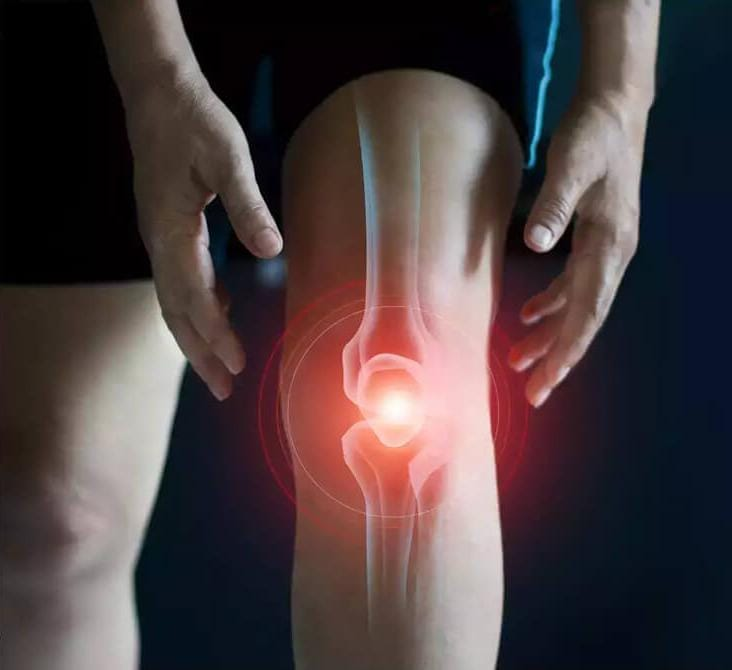
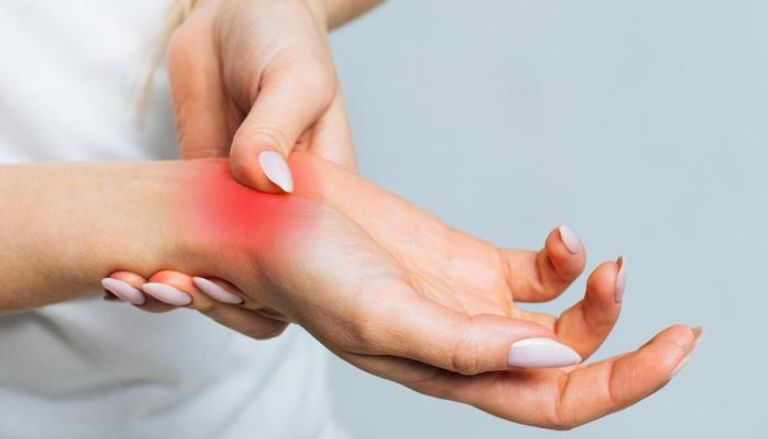

Our Services
- Joint Replacement Surgery
- Sports Medicine
- Fracture Care
- Arthritis

Joint replacement surgery is a procedure in which a surgeon removes a damaged joint and replaces it with a new, artificial part. A joint is where two or more bones come together, like the knee, hip, and shoulder. The surgery is usually done by a doctor called an orthopaedic (or-tho-PEE-dik) surgeon. Sometimes, the surgeon will not remove the whole joint, but will only replace or fix the damaged parts. The doctor may suggest a joint replacement to improve how you live. Replacing a joint can relieve pain and help you move and feel better. Hips and knees are replaced most often. Other joints that can be replaced include the shoulders, fingers, ankles, and elbows.
Sports medicine is a branch of medicine that deals with physical fitness and the treatment and prevention of injuries related to sports and exercise. Although most sports teams have employed team physicians for many years, it is only since the late 20th century that sports medicine emerged as a distinct field of health care. In some countries, sports medicine (or sport and exercise medicine) is a recognized medical specialty (with similar training and standards to other medical specialties). In the majority of countries where sports medicine is recognized and practiced, it is a physician (non-surgical) specialty, but in some (such as the USA), it can equally be a surgical or non-surgical medical specialty, and also a specialty field within primary care. In other contexts, the field of sports medicine encompasses the scope of both medical specialists as well as allied health practitioners who work in the field of sport, such as physiotherapists, athletic trainers, podiatrists and exercise physiologists.
A fracture is a break/crack in the bone, and can happen in any bone of the body.
Here are common types of fractures you might be diagnosed with or read in your x-ray report:
Nondisplaced fracture : This means the crack in the bone is not shifted, angled, or rotated and remains well aligned.
Hairline fracture : This is a nondisplaced small crack within a bone.
One common type is called a stress fracture, which occurs due to repeated stress from exercise or overuse.
Greenstick fracture : This is when a bone cracks but doesn’t break all the way through, like a piece of green wood. These often occur in children because their growing bones are more flexible than adult bones.
Comminuted fracture : In this type of fracture, the bone breaks into three or more fragments/pieces
Open or compound fracture : When an injury causes the broken bone to pierce the skin.

"Arthritis" literally means joint inflammation. Joints are places where two bones meet, such as your elbow or knee.
There are many different types of arthritis with different causes and treatments. In some types, other organs, such as your eyes, heart, or skin, can also be affected.
Common symptoms of arthritis include pain, redness, heat, and swelling in your joints
If you have arthritis, it is important for your doctor to diagnose the type of arthritis you have so that you can get the proper treatment. Fortunately, current treatments allow most people with arthritis to lead active and productive lives.
Types of Arthritis
There are several types of arthritis. Common ones include the following.
Ankylosing spondylitis : is a type of arthritis that causes inflammation in the joints and ligaments of the spine.
Gout : is a type of arthritis that occurs as flares, typically in your big toe or a lower limb.
Juvenile idiopathic arthritis : is the most common type of chronic arthritis that affects children.
Osteoarthritis : is the most common type of arthritis and is more common in older people.
Living With Arthritis: Health Information Basics for You and Your Family This illustrated booklet contains general information about osteoarthritis.
Psoriatic arthritis : can occur in people who have psoriasis (scaly red and white skin patches). It affects the skin, joints, and areas where tissues attach to bone.
Reactive arthritis : is caused by an infection in your body. Symptoms often clear up on their own within a few weeks or months.
Rheumatoid arthritis : is an autoimmune form of arthritis where the immune system attacks the healthy joint tissues

Back pain is a common reason people consult their doctor, and in many cases, conservative treatment, including physical therapy and anti-inflammatory medications, can bring relief. However, spinal deformity, spinal infections, trauma, spine tumors and some degenerative spine conditions, such as stenosis and herniated disks, may require surgical treatment. For the best outcome, it makes sense to consult a spine surgery team with plenty of experience. The spine surgeon may opt for an open (traditional) spine surgery procedure, which involves an incision along the backbone. The surgeon moves muscle and soft tissue aside to gain access to the bones of the spine and the spinal cord. Minimally invasive techniques involve a smaller incision and the insertion of a tube, through which the surgeon inserts small surgical instruments to work on the spine. Minimally invasive techniques may be able to shorten recovery time and reduce the risk of complications. Robotic spine surgery procedures can use GPS-like tracking systems to assist the spine surgeon in extremely precise placement of screws and other hardware in the course of repairing a damaged or deformed spine.
Meet Our Team
Our experienced team of orthopedic surgeons and specialists is dedicated to providing personalized care.
Cases we treat
We specialize in treating a wide range of musculoskeletal conditions, including:
- Joint pain and arthritis
- Sports injuries
- Fractures and bone disorders
- Back pain and neck pain
- Foot and ankle problems
| Days | Time |
| Saturday | 1:00pm - 4:00pm |
| sunday | 1:00pm - 4:00pm |
| Monday | 1:00pm - 4:00pm |
| Tuesday | 1:00pm - 4:00pm |
| Wednesday | 1:00pm - 4:00pm |
| Tharsday | 1:00pm - 4:00pm |
| Friday | 1:00pm - 4:00pm |
Appointment Form
© 2024 Aman Hospital. All Rights Reserved.